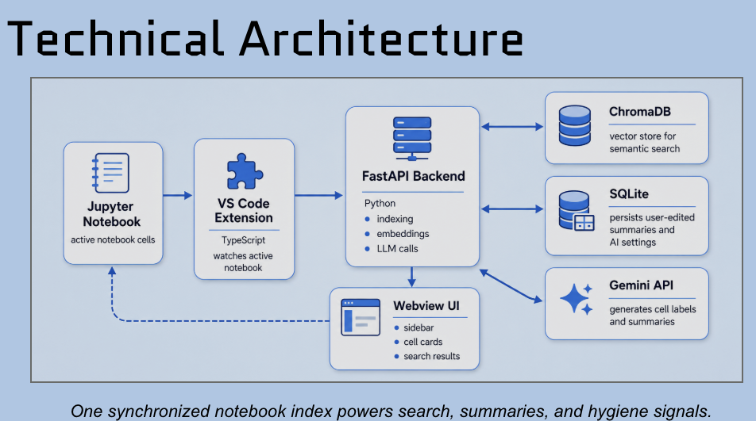

Semantic Canvas VS-Code-Erweiterung für computergestützte Notebooks
- Kontext
- Universitätspraktikum "Intelligent Systems"
- Jahr
- 2026
- Dauer
- 3 Monate
- Team
- Ich + 2 Teammitglieder
- Tools
Was ich gemacht habe
- Semantic Canvas entwickelt, eine VS-Code-Erweiterung für computergestützte Notebooks, gemeinsam mit 2 Teammitgliedern für das Universitätspraktikum "Intelligent Systems"
- Als Toolbox konzipiert, die das Navigieren, Dokumentieren und Pflegen von Notebooks beschleunigt, mit Suche als Kernfunktion
Die Herausforderung
Lange Notebooks sind schwer zu navigieren, Dokumentation wird oft übersprungen, weil sie das Programmieren verlangsamt, und Notebooks sammeln über die Zeit unbemerkt tote, veraltete oder doppelte Zellen an.
Die Lösung
Semantic Canvas ergänzt eine Seitenleisten-Codeübersicht, semantische und Stichwort-Suche, KI-unterstützte (und von Menschen editierbare) Zell-Dokumentation, einen Umschalter zwischen Seitenleisten- und Inline-Ansicht, Code-Health-Hinweise sowie konfigurierbare KI-Einstellungen. Nutzer*innen können Notebooks navigieren, dokumentieren und pflegen, ohne ihren Workflow zu unterbrechen.


1. Navigieren & Suchen
Eine Seitenleiste gibt einen klaren Überblick über die Struktur des Notebooks, sodass Nutzer*innen mit einem Klick zu jeder Zelle springen können. Zwei Suchmodi decken beide Fälle ab: semantische Suche nach den besten inhaltlichen Treffern und eine Stichwortsuche mit VS-Code-nativen Funktionen wie Ersetzen, Alle ersetzen und Groß-/Kleinschreibung beachten.
2. Dokumentation bearbeiten
Jede Zelle erhält automatisch generierte Bezeichnung und Zusammenfassung, die Nutzer*innen bearbeiten oder mit KI neu generieren können. KI-geschriebene Inhalte werden mit einem gelben Symbol markiert, von Menschen bearbeitete mit einem grünen, sodass immer klar ist, wie viel der Dokumentation von KI stammt und wie viel von Menschen.
3. Feedback erhalten
Die Erweiterung markiert tote, veraltete und doppelte Zellen und hilft Nutzer*innen so, Notebooks langfristig sauber und wartbar zu halten.

4. Ansichten wechseln
Nutzer*innen können zwischen einer Seitenleisten-Ansicht, die die gesamte Notebook-Struktur auf einen Blick zeigt, und einer Inline-Ansicht wechseln, die Dokumentation direkt über dem Code platziert – für einfacheres Debugging, Bearbeiten und eine geringere Einstiegshürde.
5. KI-Einstellungen
Nutzer*innen verwalten ihren eigenen API-Key, die Modellwahl und welche Code-Health-Checks laufen — und balancieren so Kosten, Datenschutz und persönliche Vorlieben.